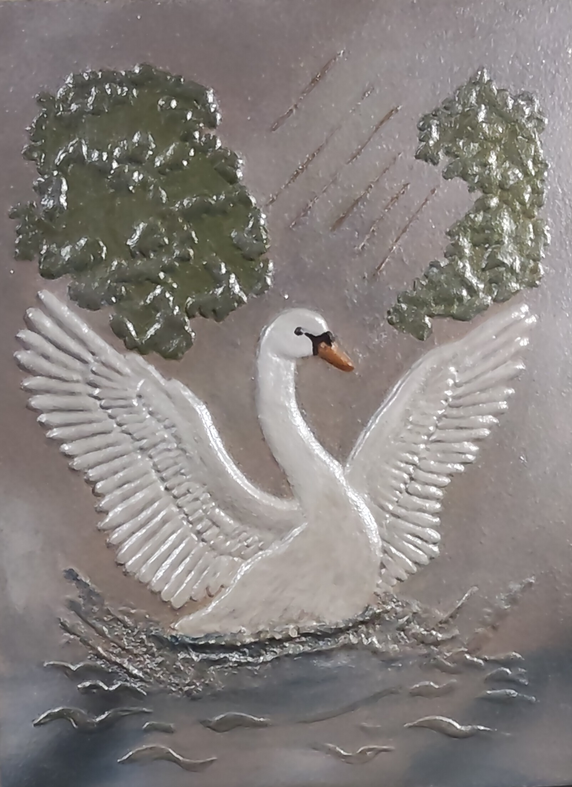

NICOLETA FILIP ART
CISNE
Composición de fauna en relieve protagonizada por un cisne blanco con las alas desplegadas, acompañado de vegetación, agua y elementos ornamentales.
Sobre la obra
CISNE presenta la figura de un cisne blanco con las alas abiertas, integrado en una escena con vegetación y una superficie de agua.
El relieve define la silueta del ave, las plumas de las alas y los distintos elementos del entorno mediante diferentes niveles de volumen y textura.
Presentación artística
La figura del cisne concentra el protagonismo de la composición, mientras las formas vegetales y los trazos del agua completan la escena.
El trabajo tridimensional permite que la luz recorra las alas, el cuerpo y los elementos del paisaje, reforzando la profundidad visual del relieve.
Ficha técnica
- Año
- 2026
- Dimensiones
- 30 × 40 cm
- Soporte
- Madera
- Técnica
- Técnica estándar
- Categoría
- Fauna
Si deseas recibir información sobre esta obra, puedes solicitarla directamente.
SOLICITAR INFORMACIÓN →